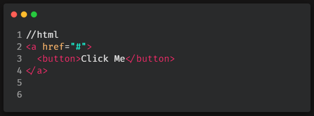
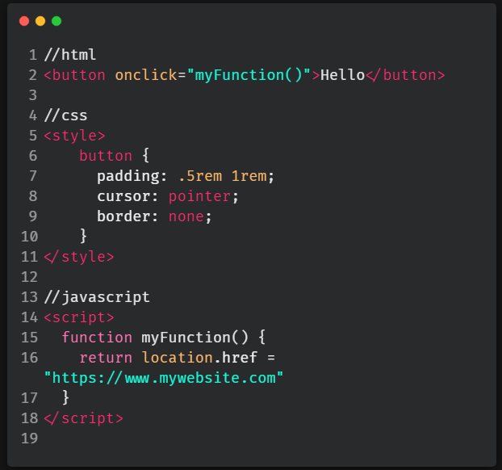
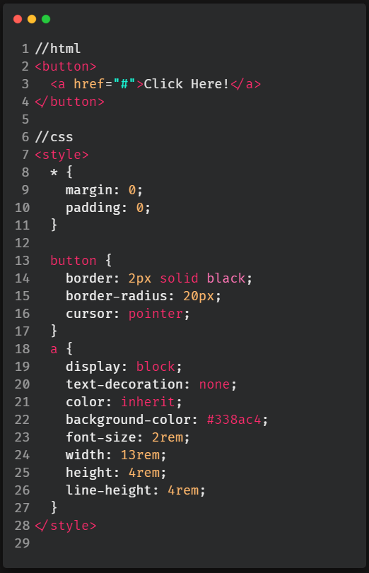
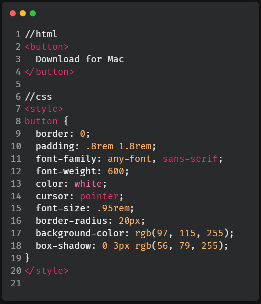

I'm button you'll find this helpful!
How should I style a button?
When I first tried seeking the answer to this question, I was surprised by the amount of answers I found. I thought, "there must be a standard best practice for styling a button, right?" Wrong! Unfortunately there are a lot of ways to go about it and each of them has their downsides.
I'll go over a few of the different ways to style a button. First, we have styling an a tag to look and function like a button element and vice versa. This technique works in terms of functionality, but is discouraged due to the fact that elements should only do what they are designed to do. You shouldn't mix and match style and functionality.
Another common solution is wrapping an a tag around a button tag.

This and the vice versa option of wrapping a button tag around an a tag are other ways that seem to work in terms of functionality, but are technically incorrect in terms of web standards.
From what I gathered while reading around, the most viable option seems to be using a Javascript onclick (or onClick if using React) function inside the button tag to go to the desired destination.

When it comes to accessibility, this Javascript option seemed to cover most of the bases. There's always an exception of course and that exception is that this solution won't work for internet users who don't have Javascript enabled on their device or browser. You can take a look at this article and decide if that is worth it for you!
So.. yeah, lots of options. In my opinion you should style your buttons how you're most comfortable, but at the same time be aware of all of the different ways to do it. If the client/company you're working for has a way they like their buttons styled, or a certain audience they're wanting to look out for more than another, you'll be ready for any request!
Troubleshooting some common issues
If you're like me, you like wrapping your a tag in a button. But, this can create a couple different problems. The first problem is that both the button and a tags will be focusable. To force a focus event to only happen once on your button instead of twice, put tabindex="1" on your button element.
Why won't the :focus state work? It definitely isn't immediately obvious, but in order to make your :focus state work when nesting an a tag (in any element, not just a button- example: svg), you need to change :focus to :focus-within.
How can I make the entire button clickable? This is a common issue I notice on many sites where people are nesting their a tags within button tags. Only the text or image inside the button is clickable and not the surrounding button surface area. This can create a user experience (UX) problem when users need to aim with their mouse (or even more annoying, tap with their finger) directly on text or an image in order to activate the button.
In the example above, you can see by the background color on the text that the clickable area only takes up the width and height of the text. Below, I'll show you the difference in surface area coverage when the nested a tag is properly styled to fit the button.
As you can see the clickable area is much larger, even spilling out of the corners of the button a little. Leaving no question that when the user clicks the button, they'll click the link! Code and further explanation below.

So what's going on in the code? The //html section is just putting the basic button and nested a link onto the page. Now going into the //css section, we need to globally reset any browser default margin and padding and we do this with the asterisk, * property. Then, the button styling is just your average button styles, nothing fancy there.
The styling for the a tag is where the magic happens.
We need to first set the a element to display: block in order for the height and width of the element to be edited. Text-decoration: none and color: inherit are resets so that the a element doesn't look how it does in its default state. Background-color is solely for the visual example (don't add that in your code) and font-size can be whatever works for your website layout. So the biggest difference here is that instead of using padding to determine our button's width and height, we are instead going to be changing the width and height on the a element to determine the size of the button.
The final piece of the puzzle is that the value of line-height must be equal to the value of height in order for the text or image within the button to be centered. That's that, a fully clickable button with an a element nested inside!
Applying subtle box shadow to buttons
Look closely, can you spot the difference between these two buttons?
I'm sure you can, but that's because they're placed side by side with not a lot else to look at surrounding them. When you're designing a button from scratch on your webpage you probably wouldn't be thinking about this difference and that's why the benefit of adding a little box shadow onto your buttons is often overlooked!
The button on the left has character, appears 3-D- seemingly asking to be clicked and in my opinion, is generally more satisfying to look at. Overall, the button on the left has a much better appearance than the one on the right. Now, the button on the right is by no means a bad button design, it just looks fairly bland when matched up to the button on the left.
So, how can you achieve this box-shadow styling on your own buttons? It's easy! Let me show you with the code below.

In this code the //html section is just a basic button element with text inside. Everything in the //css section can be up to you, except for the box-shadow property. But note, the box-shadow does depend on your background-color. What I mean by this is that whatever your background-color is, your box-shadow color should simply just be a darker shade of the background-color. Luckily it's very easy nowadays to experiment with different color combinations quickly. Try out some different shades and see what looks good! The values 0, 3px and rgb in the box-shadow stand for- 0px offset to the right and left, 3px offset downwards and rgb is the color of the shadow.
If you aren't taking notes, this is the time to start.
This blog post went in depth into a lot of specifics regarding buttons and button styling. It can be a lot to take in all at once. But, in an effort to not overwhelm, in this section I'll list out the most important things you should take away from this blog post.
The following points are good habits to get into when styling every button you make regardless of the situation.
:hover state to your buttons. Preferably also add :active for phones and :focus for keyboards, but definitely :hover for desktops. People often take for granted how satisfying a :hover state is until it's not there!
cursor: pointer property and value in your button's CSS. Having the cursor change is an easy, subtle and a basically universal way to indicate to the user that they're on a clickable element. If you forget to add a :hover state, then cursor: pointer will be a life saver.
aria-label="insert text here" if the content is wrapped in a button tag. Otherwise add both role="button" and aria-label="insert text here" inside the img tag. role="button" allows screen readers to recognize a non button tag as a button tag and treat it as such and aria-label="insert text here" allows the image you chose to be translated into readable text for the screen reader.